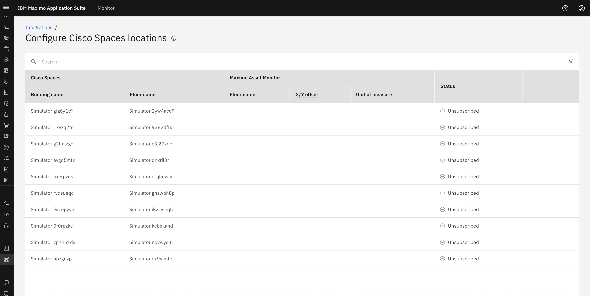

Location List Fetched from Cisco Spaces
Once the Cisco Spaces integration is successfully configured in MAS Monitor, the integration begins retrieving the list of available locations.
1. Fetched Locations
As shown in the image below, MAS Monitor has successfully fetched a list of locations from Cisco Spaces. Each location entry includes the following details:
- Building Name
- Floor Name

2. Subscription Status
At this stage, none of the locations are actively subscribed.
- The status of each location is currently marked as
Unsubscribed. - This indicates that the location data is available but not yet enabled for monitoring within MAS Monitor.